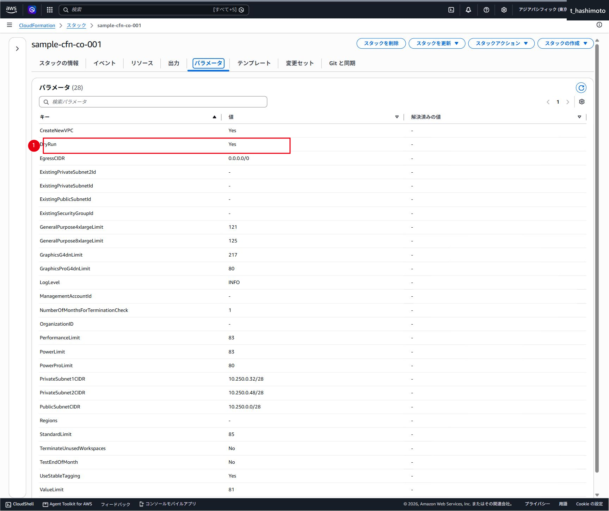
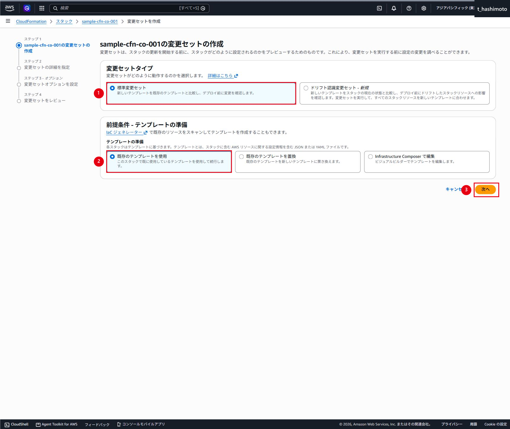
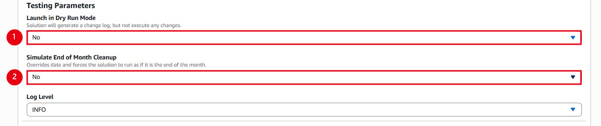
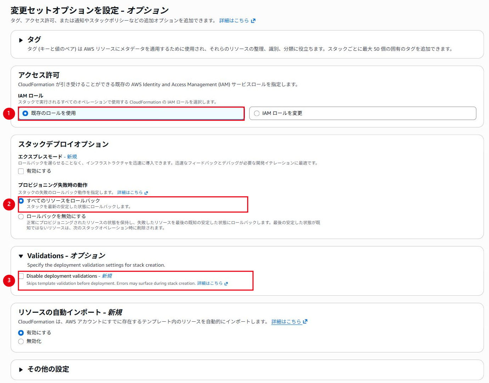
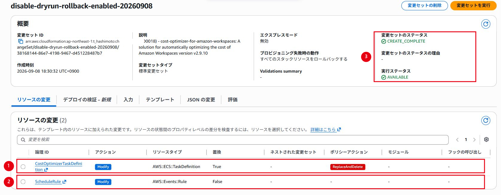
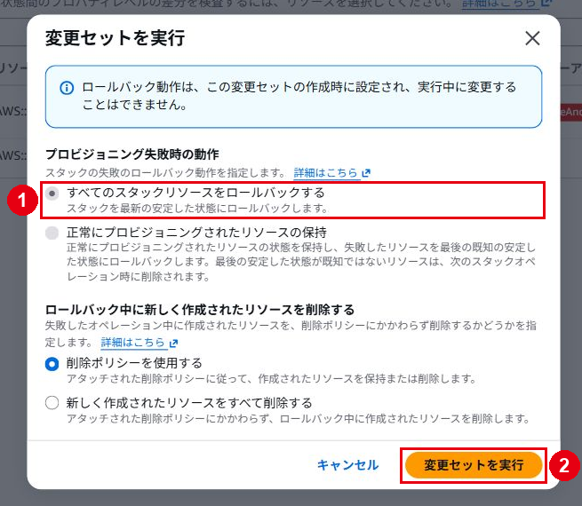
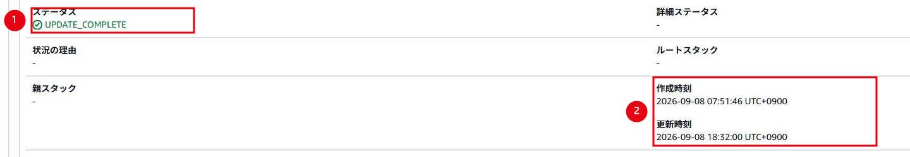
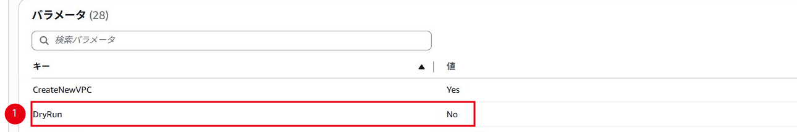
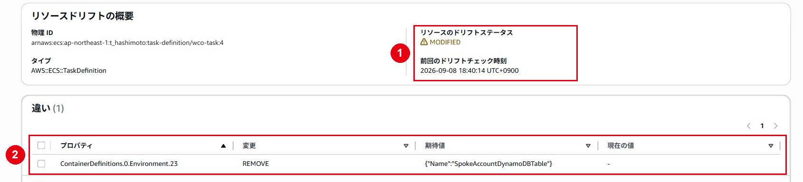

Cost OptimizerのDry Run解除
仕様
構成・動作
⚠️ 注意：同一バージョンのパラメータ変更とバージョン更新を分ける
v2.9.10の料金しきい値やDry Runだけを変更する場合は、現在のテンプレートを使用して変更セットを作成します。ソリューションのバージョンを更新する場合は、更新先バージョンの公式テンプレートを指定し、リリースノート、リソースの置換・削除、IAM差分および引き継ぐパラメータを確認します。
料金しきい値とDryRunは、CloudFormationスタックsample-cfn-co-001のパラメータとして管理します。設定変更は CloudFormation変更セット を使用し、事前に差分を確認してから実行します。
ECSタスク定義、EventBridge、IAM、S3等を直接編集するとCloudFormationの管理状態と実リソースに差分が生じるため、通常運用では行いません。
管理範囲
設定値は取得時点の検証例です。実作業では承認済みパラメータと現在のAWS環境を確認します。
制約事項
設定更新と日次処理の完了を分けて確認します。取得時点ではDry Run解除後の本処理は未確認です。
運用作業
1. 変更前の値を確認する
- CloudFormationで東京リージョンを選択します。
- スタック
sample-cfn-co-001を開きます。 - 「パラメータ」または「出力」で、変更前が
DryRun=Yesとなっていることを確認します。

2. 変更セットを作成する
- 「スタックアクション」から「現在のスタックの変更セットを作成」を選択します。
- テンプレートは「現在のテンプレートを使用」を選択し、「次へ」を選択します。

Launch in Dry Run ModeをNoに変更します。Terminate unused workspaces=No、TestEndOfMonth=Noおよび他のパラメータが意図せず変わっていないことを確認します。

- 「プロビジョニング失敗時の動作」は「すべてのリソースをロールバック」とします。
- 検証オプションに意図しない変更がないことと、IAMリソースの作成に関する承認欄を確認します。

3. 差分を確認して実行する
- 変更セット名、説明、変更理由、承認者を記録します。
- 変更セットを作成します。
- 取得例では
CostOptimizerTaskDefinitionがModify・置換True（ReplaceAndDelete）、ScheduleRuleがModify・置換Falseでした。実作業では使用中のテンプレートと変更パラメータに対する差分を確認します。 - 意図しない削除・置換がないことを確認します。

- 「変更セットを実行」を選択して確認画面を開きます。
- ロールバック設定を最終確認し、確認画面の「変更セットを実行」を選択します。

4. 更新結果を確認する
- CloudFormationが
UPDATE_COMPLETEになるまで待ちます。 - 失敗イベントがないことを確認します。
- 「パラメータ」または「出力」で
DryRun=Noを確認します。 - ECSタスク定義に新しいリビジョンが作成され、EventBridgeターゲットがそのリビジョンを参照していることを確認します。


取得済み証跡ではECSタスク定義がリビジョン3から4へ更新され、EventBridgeターゲットはwco-task:4を参照しました。
⚠️ 注意：タスク定義置換時はロールバックを有効にする
「プロビジョニング失敗時の動作」でロールバックを無効にした変更セットは、タスク定義の置換を含むため Replacement type updates not supported on stack with disable-rollback. で失敗しました。スタックをロールバックし、ロールバック有効の変更セットを作り直して成功しました。置換を含む更新ではロールバックを有効にします。
5. 設定変更後の成功可否を確認する
CloudFormationのUPDATE_COMPLETEは設定更新の成功を示しますが、日次処理や課金モード変更の完了を示すものではありません。次の5段階を順に確認します。
| 段階 | 成功条件 | 確認できる内容 |
|---|---|---|
| 1. 設定更新 | CloudFormationがUPDATE_COMPLETE |
パラメータと関連リソースの更新に成功した |
| 2. タスク実行 | ECSタスクがSTOPPED、コンテナ終了コードが0 |
日次コンテナ処理が終了した |
| 3. 処理ログ | 完了ログがあり、対象リージョンに未解決のエラーがない | 読み込んだ設定値とWorkSpaceごとの処理結果 |
| 4. レポート | 対象日のS3 CSVが存在し、内容を開ける | 判定結果、変更報告および終了結果 |
| 5. 実リソース | CSVのNew ModeとWorkSpaces実行モードが一致 |
実際の課金モード変更結果 |
ECSタスクを確認する
- ECSで
cost-optimizer-clusterを開きます。 - 対象のスケジュール実行時刻に対応するタスクを開きます。
- タスクが
STOPPEDとなっていること、停止理由およびstopCodeを確認します。 - コンテナの終了コードが0となっていることを確認します。
終了コード0でも、一部リージョンやWorkSpaceの処理に失敗している可能性があるため、CloudWatch Logsまで確認します。取得済みのタスク一覧は、レポート・監視手順の「ECSタスクを確認する」を参照します。
CloudWatch Logsを確認する
- ロググループ
/ecs/wco-task/sample-cfn-co-001を開きます。 - 対象実行のログストリームを開きます。
DryRun、料金しきい値、Regions、TerminateUnusedWorkspacesおよびTestEndOfMonthが変更後の値となっていることを確認します。ERROR、Exception、Traceback、AccessDeniedおよびFailed to change modeを検索します。- 対象リージョンの走査、対象台数、レポート出力および処理完了を確認します。
Failed to change modeがある場合は、該当WorkSpace IDでログを絞り込み、WorkSpaceの状態と例外を確認します。次回の日次実行で再試行された結果まで確認してください。取得済みログは、レポート・監視手順の「CloudWatch Logsを確認する」を参照します。
S3 CSVを確認する
- レポート用S3バケットを開きます。
YYYY/MM/DD/配下に対象日の日次CSVが生成されていることを確認します。- 集約CSVとリージョン・ディレクトリ別CSVを開きます。
WorkspaceID、Billable Hours、Usage Threshold、Change Reported、Initial Mode、New Mode、WorkspaceTerminatedおよびReportDateを確認します。- 対象WorkSpace数とログに記録された処理件数が一致することを確認します。
DryRun=YesのCSVは実行した場合の判定結果です。実変更の証跡ではありません。DryRun=NoのCSVで変更が報告された場合は、WorkSpacesコンソールまで確認します。取得済みの日次CSVは、レポート・監視手順の「S3レポートを確認する」を参照します。
WorkSpacesの実行モードを確認する
- WorkSpacesコンソールで、CSVの
WorkspaceIDを検索します。 - 対象WorkSpaceの実行モードを確認します。
- CSVの
New Modeと一致することを確認します。 Initial Mode、New Mode、確認日時および確認者を記録します。
更新対象が0件でも、利用時間と料金しきい値の判定結果として正常な場合があります。CSVで変更対象が0件となっていることと、ログに未解決のエラーがないことを確認して判定します。
CloudWatchダッシュボードを補助確認する
監視対象総数、時間課金・月額課金の台数、課金モード変換件数、終了件数、失敗・スキップ件数およびECSタスク処理時間を確認します。ダッシュボードは全体傾向を確認する補助資料です。単独では成功判定に使用しません。
6. ドリフト確認の補足
取得済みのCloudFormationドリフト検出では、CostOptimizerTaskDefinitionがMODIFIEDでした。差分は、単一アカウント構成でテンプレートに空文字として定義されたSpokeAccountDynamoDBTable環境変数が、ECS側では未設定となっている内容です。

これは取得済み証跡の範囲では実行時刻変更によるドリフトではありません。ただし、EventBridgeルールなどCloudFormation管理下のリソースを直接変更した場合は、現在の状態を改めてドリフト検出してください。
7. 料金しきい値を変更する場合
「変更セットを作成する」から「更新結果を確認する」までと同様に、変更する料金パラメータだけを新しい値へ変更します。それ以外は既存値を維持します。
- AWSの最新料金とWorkSpacesの利用実績から、損益分岐となる時間を算出します。
- 変更前後の値、根拠、対象リージョン、承認者を記録します。
- 変更セットで差分を確認します。
UPDATE_COMPLETEと出力値を確認します。- 次回実行のログとCSVに新しいしきい値が記録されることを確認します。
8. 切り戻し
設定を戻す場合も、直前の値を入力した新しい変更セットを作成し、差分確認後に実行します。緊急時にDryRun=Yesへ戻しても、すでに実行済みの課金モード変更は自動的には元へ戻りません。終了済みWorkSpaceも復元されません。課金モードはWorkSpacesコンソールで個別に確認し、必要な変更は承認後に実施します。
9. 取得済み証跡の判定
| 確認項目 | 状態 | 根拠 |
|---|---|---|
| v2.9.10デプロイ | 完了 | 41リソースがCREATE_COMPLETE、出力がSolutionVersion=v2.9.10 |
| Dry Run解除 | 完了 | CloudFormationがUPDATE_COMPLETE、パラメータがDryRun=No |
| 変更前のDry Run処理 | 完了 | S3 CSV、CloudWatch Logsおよびダッシュボードを確認 |
| Dry Run解除後の初回処理 | 未確認 | 証跡取得時点では二重実行防止のためEventBridgeルールを一時無効化 |
| 課金モードの実変更 | 未確認 | 次回の日次実行後にCSVとWorkSpaces実行モードの突合が必要 |
変更後確認
- CloudFormationスタックが
UPDATE_COMPLETEとなっていること。 - 変更後パラメータとEventBridgeターゲットを確認できること。
- ECSタスクの終了コードが0で、対象リージョンに未解決の処理エラーがないこと。
- 対象日のS3 CSVが生成され、変更が報告された場合はWorkSpaces実行モードと一致すること。